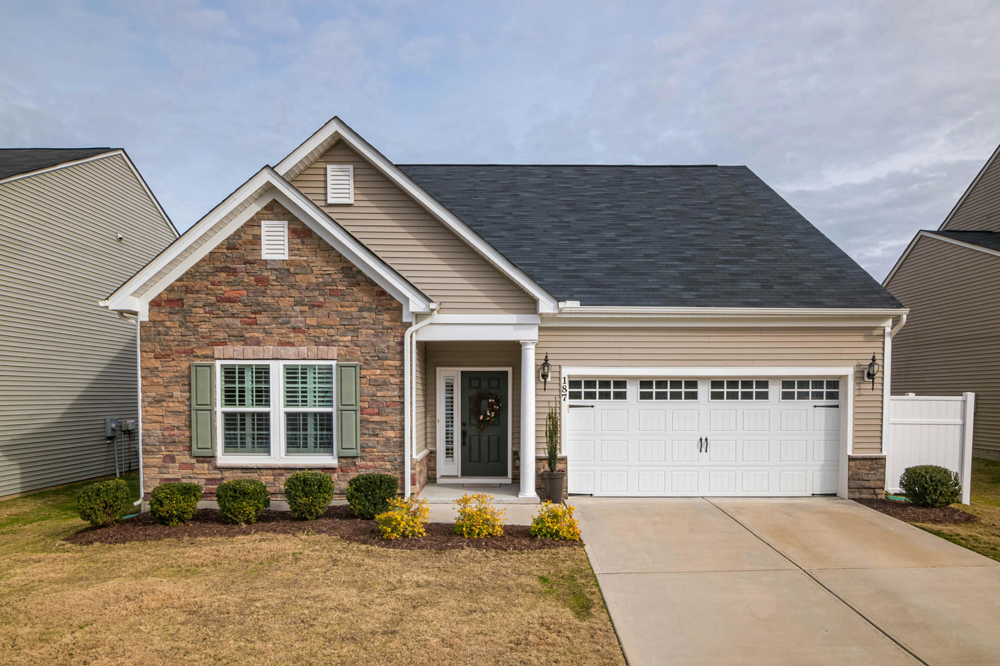
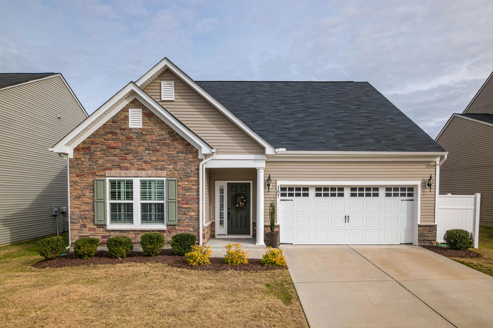

.png)
 

“BrightSprout gave our front yard a whole new look with plants that don’t need much water. It’s easy to take care of, looks great, and even our neighbors noticed.”
We are a local, eco-friendly landscaping company that designs, installs, and maintains outdoor spaces for homes and small businesses. We focus on sustainable plants, water-conscious irrigation, and creative garden design. We combine sustainable practices with local expertise.
Whether you’re looking for stunning garden designs or efficient irrigation systems, we transform outdoor spaces into thriving green retreats.
Our Services
BrightSprout Landscaping offers complete outdoor solutions for Missouri homes and small businesses. Our eco-friendly landscaping packages include design plans, lawn installation, irrigation systems, and seasonal maintenance. From quick consultations with our Sprout Plan to full-yard transformations with our Bloom Plan, we help every yard grow beautifully and sustainably. Learn more about our services and pricing option to find the perfect fit for your space.
Serving Missouri Communities
Based in the Kansas City area, BrightSprout Landscaping proudly serves nearby communities including Raymore, Belton, Lee’s Summit, and surrounding neighborhoods. Our knowledge of local soil types, weather patterns, and native plants helps us design outdoor spaces that look great all year round and are easy to maintain.
BrightSprout Tips
Did you know native plants can save up to 60% more water than traditional lawns? Our team helps homeowners select plants that not only thrive in Missouri but also reduce maintenance time and water costs. Visit our Blogs and Tips page for more ideas on how to create a landscape that works with nature—not against it.
Blog & Tips